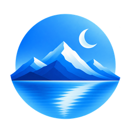
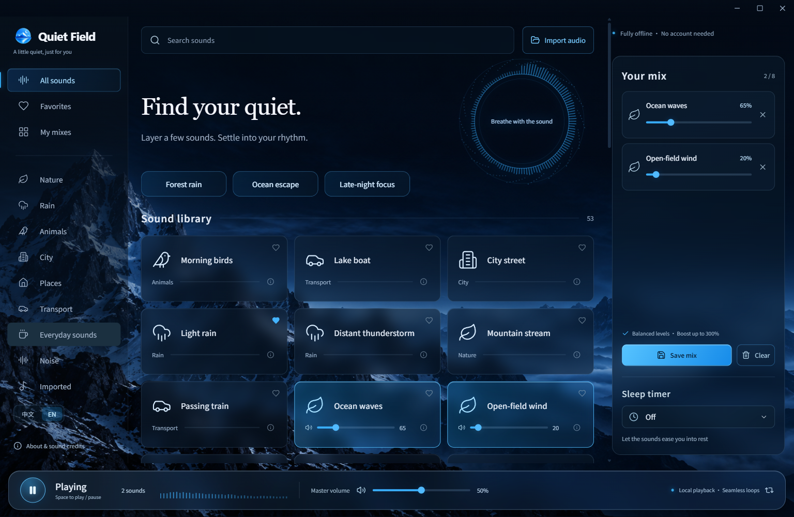

Keep the mood going.
Crossfaded loop boundaries reduce abrupt restarts. Layer up to 8 sounds, balance their levels and let the sleep timer gently fade out.

Quiet FieldA little quiet, just for you
Your favorite corner of the world, in your headphones. Mix 53 sounds. Save your own escape. Listen offline.
12-second previews · headphones welcome
A little ocean. A little wind. Adjust each layer, then save the mix for next time.

53 sounds: rain, forests, ocean waves, everyday spaces and three colors of noise. All bundled, so you can leave the connection behind.
All 53 sounds & credits ↗Crossfaded loop boundaries reduce abrupt restarts. Layer up to 8 sounds, balance their levels and let the sleep timer gently fade out.
Import your recordings, favorite sounds and save named mixes. No account. No ads. No telemetry in the app.
Download the ZIP, extract the entire folder, then open QuietField-win32-x64/静野.exe. 静野 is the Chinese name. Keep all accompanying files together. No installer or account needed.
Currently Windows x64. macOS, Linux, Android and iOS builds are not available. The app is unsigned, so Windows may show a reputation warning; use the official GitHub release.
The full library is included, with many original uncompressed WAV recordings. The website plays only short compressed previews; the app works without an internet connection.
Yes: extract the new version into a new folder and keep your local data in %APPDATA%/QuietField-Public. You can switch between English and Chinese without restarting playback. There is no cloud sync.
Absolutely. Open a GitHub issue in English or Chinese. Include your Windows version and steps for bugs; include the original source and license for recordings.